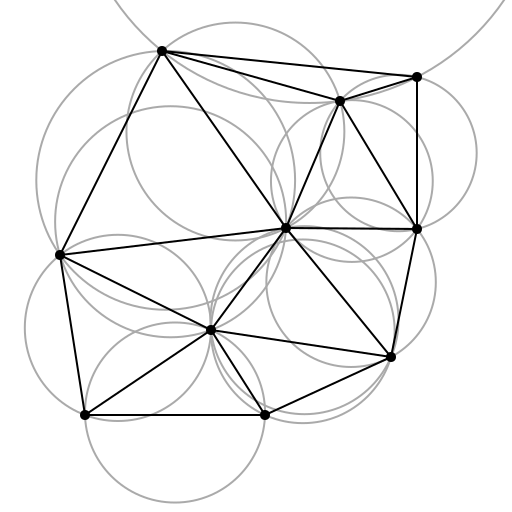
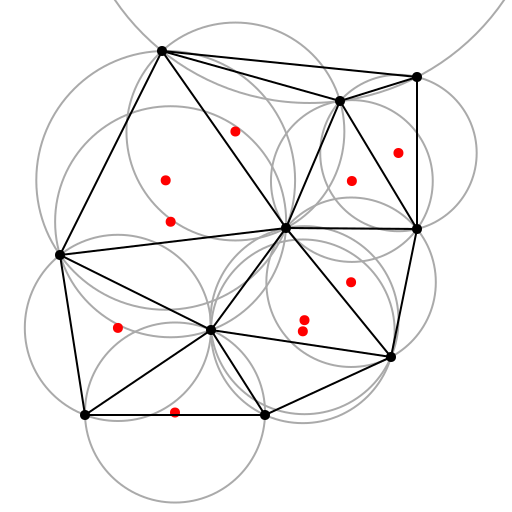
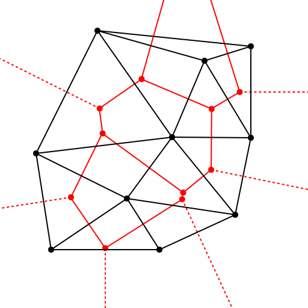
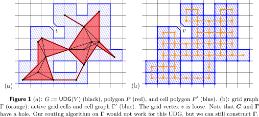
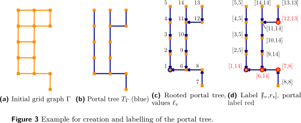

Hybrid Communication Networks
The Return of the Polyminoes
Table of Contents
Summary
(Coy et al. 2022)
Combine 5G and ad-hoc wireless.
Goal:
- Correct
- Efficient
- Compact
Prerequisites
- UDG: Unit-disk graph: nodes connected \(\iff\) distance ≤ 1
- radio hole: UDG has an internal cycle that cannot be triangulated
- Delaunay triangulation
Delaunay triangulation
Delaunay triangulation

Delaunay triangulation

Delaunay triangulation

Dual graph

Assumptions
- UDG, no radio holes \(\implies\) triangularizable
Grid graph
Analogous to polyminoes. Can be created locally.

Routing using the “portal tree”

Proven
- 1.2. Impossible to set up compact routing with constant stretch in \(o(\sqrt n)\) time
- Unless you use a hybrid network, then it can be done in \(O(\log n)\)
- 5. You can find shortest paths in the grid-graph
- 3.1. Shortest paths in the grid-graph approximate shortest paths in the UDG